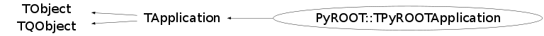

class PyROOT::TPyROOTApplication: public TApplication
Setup interactive application for python
The TPyROOTApplication sets up the nuts and bolts for interactive ROOT use
from python, closely following TRint. Note that not everything is done here,
some bits (such as e.g. the use of exception hook for shell escapes) are more
easily done in python and you'll thus find them ROOT.py
The intended use of this class is from python only. It is used by default in
ROOT.py, so if you do not want to have a TApplication derived object created
for you, you'll need to load libPyROOT.so instead.
The static InitXYZ functions are used in conjunction with TPyROOTApplication
in ROOT.py, but they can be used independently.
NOTE: This class will receive the command line arguments from sys.argv. A
distinction between arguments for TApplication and user arguments can be
made by using "-" or "--" as a separator on the command line.
Function Members (Methods)
public:
| virtual | ~TPyROOTApplication() |
| void | TObject::AbstractMethod(const char* method) const |
| virtual void | TObject::AppendPad(Option_t* option = "") |
| virtual const char* | TApplication::ApplicationName() const |
| static Bool_t | TQObject::AreAllSignalsBlocked() |
| Bool_t | TQObject::AreSignalsBlocked() const |
| Int_t | TApplication::Argc() const |
| char** | TApplication::Argv() const |
| char* | TApplication::Argv(Int_t index) const |
| static Bool_t | TQObject::BlockAllSignals(Bool_t b) |
| Bool_t | TQObject::BlockSignals(Bool_t b) |
| virtual void | TObject::Browse(TBrowser* b) |
| virtual void | TQObject::ChangedBy(const char* method)SIGNAL |
| static TClass* | Class() |
| virtual const char* | TObject::ClassName() const |
| virtual void | TObject::Clear(Option_t* = "") |
| void | TApplication::ClearInputFiles() |
| virtual TObject* | TObject::Clone(const char* newname = "") const |
| void | TQObject::CollectClassSignalLists(TList& list, TClass* cls) |
| virtual Int_t | TObject::Compare(const TObject* obj) const |
| Bool_t | TQObject::Connect(const char* signal, const char* receiver_class, void* receiver, const char* slot) |
| static Bool_t | TQObject::Connect(TQObject* sender, const char* signal, const char* receiver_class, void* receiver, const char* slot) |
| static Bool_t | TQObject::Connect(const char* sender_class, const char* signal, const char* receiver_class, void* receiver, const char* slot) |
| virtual void | TQObject::Connected(const char*) |
| virtual void | TObject::Copy(TObject& object) const |
| static void | TApplication::CreateApplication() |
| static Bool_t | CreatePyROOTApplication(Bool_t bLoadLibs = kTRUE) |
| virtual void | TObject::Delete(Option_t* option = "")MENU |
| virtual void | TQObject::Destroyed()SIGNAL |
| Bool_t | TQObject::Disconnect(const char* signal = 0, void* receiver = 0, const char* slot = 0) |
| static Bool_t | TQObject::Disconnect(TQObject* sender, const char* signal = 0, void* receiver = 0, const char* slot = 0) |
| static Bool_t | TQObject::Disconnect(const char* class_name, const char* signal, void* receiver = 0, const char* slot = 0) |
| virtual void | TQObject::Disconnected(const char*) |
| virtual Int_t | TObject::DistancetoPrimitive(Int_t px, Int_t py) |
| virtual void | TObject::Draw(Option_t* option = "") |
| virtual void | TObject::DrawClass() constMENU |
| virtual TObject* | TObject::DrawClone(Option_t* option = "") constMENU |
| virtual void | TObject::Dump() constMENU |
| void | TQObject::Emit(const char* signal) |
| void | TQObject::Emit(const char* signal, Long_t* paramArr) |
| void | TQObject::Emit(const char* signal, const char* params) |
| void | TQObject::Emit(const char* signal, Double_t param) |
| void | TQObject::Emit(const char* signal, Long_t param) |
| void | TQObject::Emit(const char* signal, Long64_t param) |
| void | TQObject::Emit(const char* signal, Bool_t param) |
| void | TQObject::Emit(const char* signal, Char_t param) |
| void | TQObject::Emit(const char* signal, UChar_t param) |
| void | TQObject::Emit(const char* signal, Short_t param) |
| void | TQObject::Emit(const char* signal, UShort_t param) |
| void | TQObject::Emit(const char* signal, Int_t param) |
| void | TQObject::Emit(const char* signal, UInt_t param) |
| void | TQObject::Emit(const char* signal, ULong_t param) |
| void | TQObject::Emit(const char* signal, ULong64_t param) |
| void | TQObject::Emit(const char* signal, Float_t param) |
| void | TQObject::EmitVA(const char* signal, Int_t nargs) |
| void | TQObject::EmitVA(const char* signal, Int_t nargs, va_list va) |
| virtual void | TObject::Error(const char* method, const char* msgfmt) const |
| virtual void | TObject::Execute(const char* method, const char* params, Int_t* error = 0) |
| virtual void | TObject::Execute(TMethod* method, TObjArray* params, Int_t* error = 0) |
| virtual void | TObject::ExecuteEvent(Int_t event, Int_t px, Int_t py) |
| static Long_t | TApplication::ExecuteFile(const char* file, Int_t* error = 0, Bool_t keep = kFALSE) |
| TApplication::EExitOnException | TApplication::ExitOnException(TApplication::EExitOnException opt = kExit) |
| virtual void | TObject::Fatal(const char* method, const char* msgfmt) const |
| virtual TObject* | TObject::FindObject(const char* name) const |
| virtual TObject* | TObject::FindObject(const TObject* obj) const |
| virtual TApplicationImp* | TApplication::GetApplicationImp() |
| static TList* | TApplication::GetApplications() |
| TApplication* | TApplication::GetAppRemote() const |
| virtual Option_t* | TObject::GetDrawOption() const |
| static Long_t | TObject::GetDtorOnly() |
| virtual const char* | TObject::GetIconName() const |
| const char* | TApplication::GetIdleCommand() const |
| TList* | TQObject::GetListOfClassSignals() const |
| TList* | TQObject::GetListOfConnections() const |
| TList* | TQObject::GetListOfSignals() const |
| virtual const char* | TObject::GetName() const |
| virtual char* | TObject::GetObjectInfo(Int_t px, Int_t py) const |
| static Bool_t | TObject::GetObjectStat() |
| virtual Option_t* | TObject::GetOption() const |
| virtual void | TApplication::GetOptions(Int_t* argc, char** argv) |
| TSignalHandler* | TApplication::GetSignalHandler() const |
| virtual const char* | TObject::GetTitle() const |
| virtual UInt_t | TObject::GetUniqueID() const |
| virtual void | TApplication::HandleException(Int_t sig) |
| virtual void | TApplication::HandleIdleTimer()SIGNAL |
| virtual Bool_t | TApplication::HandleTermInput() |
| virtual Bool_t | TObject::HandleTimer(TTimer* timer) |
| virtual Bool_t | TQObject::HasConnection(const char* signal_name) const |
| virtual ULong_t | TObject::Hash() const |
| virtual void | TApplication::Hide() |
| virtual void | TQObject::HighPriority(const char* signal_name, const char* slot_name = 0) |
| virtual void | TApplication::Iconify() |
| virtual void | TObject::Info(const char* method, const char* msgfmt) const |
| virtual Bool_t | TObject::InheritsFrom(const char* classname) const |
| virtual Bool_t | TObject::InheritsFrom(const TClass* cl) const |
| virtual void | TApplication::Init() |
| static Bool_t | InitCINTMessageCallback() |
| void | TApplication::InitializeGraphics() |
| static Bool_t | InitROOTGlobals() |
| static Bool_t | InitROOTMessageCallback() |
| TObjArray* | TApplication::InputFiles() const |
| virtual void | TObject::Inspect() constMENU |
| void | TObject::InvertBit(UInt_t f) |
| virtual TClass* | IsA() const |
| virtual Bool_t | TApplication::IsCmdThread() |
| virtual Bool_t | TObject::IsEqual(const TObject* obj) const |
| virtual Bool_t | TObject::IsFolder() const |
| Bool_t | TObject::IsOnHeap() const |
| Bool_t | TApplication::IsRunning() const |
| virtual Bool_t | TObject::IsSortable() const |
| Bool_t | TObject::IsZombie() const |
| virtual void | TApplication::KeyPressed(Int_t key)SIGNAL |
| virtual void | TApplication::LineProcessed(const char* line)SIGNAL |
| static void | TQObject::LoadRQ_OBJECT() |
| virtual void | TApplication::Lower() |
| virtual void | TQObject::LowPriority(const char* signal_name, const char* slot_name = 0) |
| virtual void | TApplication::ls(Option_t* option = "") const |
| void | TObject::MayNotUse(const char* method) const |
| virtual void | TQObject::Message(const char* msg)SIGNAL |
| static void | TApplication::NeedGraphicsLibs() |
| Bool_t | TApplication::NoLogoOpt() const |
| Bool_t | TApplication::NoLogOpt() const |
| virtual Bool_t | TObject::Notify() |
| virtual Int_t | TQObject::NumberOfConnections() const |
| virtual Int_t | TQObject::NumberOfSignals() const |
| void | TObject::Obsolete(const char* method, const char* asOfVers, const char* removedFromVers) const |
| virtual void | TApplication::Open() |
| static void | TObject::operator delete(void* ptr) |
| static void | TObject::operator delete(void* ptr, void* vp) |
| static void | TObject::operator delete[](void* ptr) |
| static void | TObject::operator delete[](void* ptr, void* vp) |
| void* | TObject::operator new(size_t sz) |
| void* | TObject::operator new(size_t sz, void* vp) |
| void* | TObject::operator new[](size_t sz) |
| void* | TObject::operator new[](size_t sz, void* vp) |
| TObject& | TObject::operator=(const TObject& rhs) |
| virtual void | TObject::Paint(Option_t* option = "") |
| virtual void | TObject::Pop() |
| virtual void | TObject::Print(Option_t* option = "") const |
| virtual Long_t | TApplication::ProcessFile(const char* file, Int_t* error = 0, Bool_t keep = kFALSE) |
| virtual Long_t | TApplication::ProcessLine(const char* line, Bool_t sync = kFALSE, Int_t* error = 0) |
| Bool_t | TApplication::QuitOpt() const |
| virtual void | TApplication::Raise() |
| virtual Int_t | TObject::Read(const char* name) |
| virtual void | TObject::RecursiveRemove(TObject* obj) |
| virtual void | TApplication::RemoveIdleTimer() |
| void | TObject::ResetBit(UInt_t f) |
| Bool_t | TApplication::ReturnFromRun() const |
| virtual void | TApplication::ReturnPressed(char* text)SIGNAL |
| virtual void | TApplication::Run(Bool_t retrn = kFALSE) |
| virtual void | TObject::SaveAs(const char* filename = "", Option_t* option = "") constMENU |
| virtual void | TObject::SavePrimitive(ostream& out, Option_t* option = "") |
| void | TObject::SetBit(UInt_t f) |
| void | TObject::SetBit(UInt_t f, Bool_t set) |
| virtual void | TObject::SetDrawOption(Option_t* option = "")MENU |
| static void | TObject::SetDtorOnly(void* obj) |
| virtual void | TApplication::SetEchoMode(Bool_t mode) |
| virtual void | TApplication::SetIdleTimer(UInt_t idleTimeInSec, const char* command) |
| static void | TObject::SetObjectStat(Bool_t stat) |
| void | TApplication::SetReturnFromRun(Bool_t ret) |
| virtual void | TObject::SetUniqueID(UInt_t uid) |
| virtual void | TApplication::Show() |
| virtual void | ShowMembers(TMemberInspector& insp) |
| virtual void | TApplication::StartIdleing() |
| virtual void | TApplication::StopIdleing() |
| virtual void | Streamer(TBuffer& b) |
| void | StreamerNVirtual(TBuffer& b) |
| virtual void | TObject::SysError(const char* method, const char* msgfmt) const |
| virtual Int_t | TApplication::TabCompletionHook(char* buf, int* pLoc, ostream& out) |
| virtual void | TApplication::Terminate(Int_t status = 0)SIGNAL |
| Bool_t | TObject::TestBit(UInt_t f) const |
| Int_t | TObject::TestBits(UInt_t f) const |
| PyROOT::TPyROOTApplication | TPyROOTApplication(const char* acn, Int_t* argc, char** argv, Bool_t bLoadLibs = kTRUE) |
| virtual void | TObject::UseCurrentStyle() |
| virtual void | TObject::Warning(const char* method, const char* msgfmt) const |
| const char* | TApplication::WorkingDirectory() const |
| virtual Int_t | TObject::Write(const char* name = 0, Int_t option = 0, Int_t bufsize = 0) |
| virtual Int_t | TObject::Write(const char* name = 0, Int_t option = 0, Int_t bufsize = 0) const |
protected:
| static Int_t | TQObject::CheckConnectArgs(TQObject* sender, TClass* sender_class, const char* signal, TClass* receiver_class, const char* slot) |
| static void | TApplication::Close(TApplication* app) |
| static Bool_t | TQObject::ConnectToClass(TQObject* sender, const char* signal, TClass* receiver_class, void* receiver, const char* slot) |
| static Bool_t | TQObject::ConnectToClass(const char* sender_class, const char* signal, TClass* receiver_class, void* receiver, const char* slot) |
| virtual void | TObject::DoError(int level, const char* location, const char* fmt, va_list va) const |
| virtual void* | TQObject::GetSender() |
| virtual const char* | TQObject::GetSenderClassName() const |
| virtual void | TApplication::Help(const char* line) |
| virtual void | TApplication::LoadGraphicsLibs() |
| virtual void | TApplication::MakeBatch() |
| void | TObject::MakeZombie() |
| static TApplication* | TApplication::Open(const char* url, Int_t debug, const char* script) |
| static Int_t | TApplication::ParseRemoteLine(const char* ln, TString& hostdir, TString& user, Int_t& dbg, TString& script) |
| virtual Long_t | TApplication::ProcessRemote(const char* line, Int_t* error = 0) |
| void | TApplication::SetSignalHandler(TSignalHandler* sh) |
Data Members
public:
| enum TApplication::EStatusBits { | kProcessRemotely | |
| kDefaultApplication | ||
| }; | ||
| enum TApplication::EExitOnException { | kDontExit | |
| kExit | ||
| kAbort | ||
| }; | ||
| enum TObject::EStatusBits { | kCanDelete | |
| kMustCleanup | ||
| kObjInCanvas | ||
| kIsReferenced | ||
| kHasUUID | ||
| kCannotPick | ||
| kNoContextMenu | ||
| kInvalidObject | ||
| }; | ||
| enum TObject::[unnamed] { | kIsOnHeap | |
| kNotDeleted | ||
| kZombie | ||
| kBitMask | ||
| kSingleKey | ||
| kOverwrite | ||
| kWriteDelete | ||
| }; |
protected:
| TApplication* | TApplication::fAppRemote | Current remote application, if defined |
| TList* | TQObject::fListOfConnections | ! list of connections to this object |
| TList* | TQObject::fListOfSignals | ! list of signals from this object |
| Bool_t | TQObject::fSignalsBlocked | ! flag used for suppression of signals |
| static Bool_t | TQObject::fgAllSignalsBlocked | flag used for suppression of all signals |
| static TList* | TApplication::fgApplications | List of available applications |
Class Charts
{kind=link}
{kind=link}
{kind=link}
{kind=link}

Function documentation
TPyROOTApplication(const char* acn, Int_t* argc, char** argv, Bool_t bLoadLibs = kTRUE)
Create a TApplication derived for use with interactive ROOT from python. A set of standard, often used libs is loaded if bLoadLibs is true (default).
Bool_t CreatePyROOTApplication(Bool_t bLoadLibs = kTRUE)
Create a TPyROOTApplication. Returns false if gApplication is not null.
Bool_t InitROOTGlobals()
Setup the basic ROOT globals gBenchmark, gStyle, gProgname, if not already set. Always returns true.
Bool_t InitCINTMessageCallback()
Install CINT message callback which will turn CINT error message into python exceptions. Always returns true.